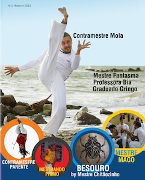
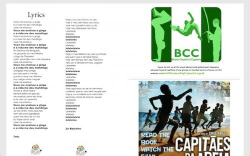
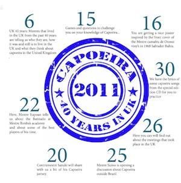

Обзор журнала «Capoeira Magazine»
Интернет богат на веб-ресурсы о капуэйре, но к сожалению многие хорошие проекты не живут долго, перестают обновляться, или того хуже просто пропадают из киберпространства. Так канул в лету Capoeira4All.org (сейчас адрес перенаправлявется на сайт группы Batuque Holland), почти не обновляется любимый мной «Roda Magazine» и многие другие ресурсы. Надеюсь такая же печальная судьба не постигнет свежий „Capoeira Passion“ и недавно запущенный печатно-электронный журнал «Capoeira Magazine». Речь о последнем и пойдёт в этом обзоре.
Пилотный номер англоязычного «Capoeira Magazine» появился в ноябре 2011 года, после чего, создатели журнала в составе местре Maxwel (Île de Capoeira, Wales) и группы энтузиастов, стали готовить второе издание (официальный первый номер), который увидел свет только в марте 2012 года. Примерно тогда я его и приметил. Хотя и журнал является платным и стоит не мало (8 долларов за номер; можно получить бумажную или электронную версию), я решил дать ему шанс и купил сразу два номера.
Список авторов статей из первого номера впечатлил: Mestre Nestor Capoeira, Jelon Vieira, Poncianinho, Glauber, Acordeon. Над вторым номером уже работали Mestre Fantasma (один из первых местре британского происхождения), Mago, Ray и другие.
Если пилотный номер был посвящен сорокалетию капуэйры в Великобритании и содержал несколько статей о истории капуэйры в Британии, то второе издание содержало несколько интервью и автобиографий известных капуэйристов (в звании от professor и выше), живущих в Европе.
Помимо статей в журнале есть:
- Страничка с песнями (ладаиньи, корридуш). В электронной версии журнала песни можно сразу же прослушать.
- Разворот с фотографиями с больших капуэйра-мероприятий (в основном в Великобритании).
- Афиши грядущих событий в Европе, релевантная реклама (типа штаны от Espiro Mirrima) и полезные ссылки.
- К некоторым статьям даны видео, которые тут же можно посмотреть в электронной версии.
- К каждому номеру прилагался диск с музыкой: в пилотном это были хиты „OFICINA DA CAPOEIRA“, а в мартовском — SAO SALOMAO от Mestre Mago.
- В первом издании порадовал кроссворд ;)

В целом, журнал покажется интересным тем, кто интересуется современной историей капуэйры, особенно в Европейской части земного шара. И тем, кто любит читать персоналии живущих капуэйристов. Но мне кажется авторы могли бы сделать журнал пообъемнее и полезнее, добавив статьи об истоках капуэйры, обхватив не только капуэйру в Европе, но и в Бразилии, США и других странах.
Журнал имеет кучу недостатков и пожалуй главные — это цена, неудобство электронной версии и небольшой объем информации. И если бы вы сейчас спросили — стоит ли журнал своих денег? То я бы уверено сказал «нет», но как и любое хорошее начинание, его нужно поддерживать, и возможно, через пару номеров мы увидем что-то стоящее (хотя бы тех потраченных восьми долларов) и более серьезное.
Искренне желаю авторам этого журнала продолжать развиваться и выпускать журнал дальше, надеюсь со временем он станет еще лучше и интереснее.
P.S.:
После изучения двух номеров под микроскопом, я отправил список советов и предложений авторам журнала, и очень обрадовался когда увидел, что авторы очень позитивно на них отреагировали и часть уже реализовали или попытаются сделать в будущем.
P. P. S.:
Напоминаю, что до 7 мая продолжается конкурс (голосование и прием кандидатов) Лучший альбом в «жанре» Capoeira Angola. Спешите!
Другие обзоры:
- Три принципа Идо Портала
- Впечатления от просмотра фильма Jogo de Idea (DVD) с Mestre Camaleao
- Aruanda – документальный фильм о капуэйре и местре Poncianinho